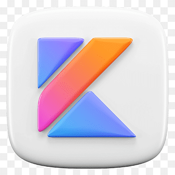

Lenguajes de programación para aplicaciones móviles
Introducción
Cuando pensamos en una app móvil hoy en día, damos por hecho que abrirá al instante, que la navegación será fluida y que podrá acceder a cámara, sensores, red y notificaciones sin fricciones. No siempre fue así. Detrás de esa experiencia hay una historia de lenguajes que fueron evolucionando a medida que los dispositivos ganaban potencia y las expectativas de los usuarios crecían.
Desde Java ME y los SDK propietarios de los primeros teléfonos hasta Kotlin (Android) y Swift (iOS), la programación móvil ha pasado por varias generaciones marcadas por la seguridad, la productividad y el rendimiento.
Los primeros años: Java ME, Symbian C++ y entornos propietarios
A finales de los 90 y comienzos de los 2000, los llamados feature phones ejecutaban aplicaciones pequeñas: juegos sencillos, utilidades básicas y poco más. Java Micro Edition (Java ME) se convirtió en el estándar de facto para distribuir MIDlets en multitud de dispositivos con memoria y CPU muy limitadas.
En paralelo, Symbian (muy popular en Nokia) permitía desarrollo en C++, y cada fabricante ofrecía SDKs y APIs propios (BREW, Series 40/60, etc.). El resultado: fragmentación y una experiencia de desarrollo muy dispar.
- Limitaciones clave de esta etapa:
- UIs muy básicas y poco uniformes.
- APIs inconsistentes entre fabricantes.
- Restricciones de memoria/almacenamiento que condicionaban el diseño de las apps.
El punto de inflexión (2007–2009): iPhone/Objective-C y Android/Java
2007: Apple lanza el iPhone y, con él, un SDK centrado en Objective-C (un derivado de C con messaging al estilo Smalltalk). Aunque su sintaxis puede resultar verbosa, ofrecía: - Acceso estructurado al UI toolkit (UIKit), al ciclo de vida de las apps y a APIs de sistema bien diseñadas. - Un ecosistema de herramientas (Xcode, Instruments) muy integrado.
2008: Google publica Android y apuesta por Java sobre una máquina virtual optimizada para dispositivos (primero Dalvik, luego ART). Esto trajo: - Un pool de desarrolladores enorme que ya conocían Java. - Una curva de adopción rápida y un marketplace (Android Market → Google Play) con baja fricción de entrada.
Ambos ecosistemas consolidaron el desarrollo nativo, con control fino sobre recursos y rendimiento.
Evolución de necesidades y del diseño de lenguajes
A medida que las apps se hicieron más complejas (multimedia, gráficos acelerados, redes sociales, banca, comercio, cifrado), crecieron las exigencias:
- Seguridad: gestión de memoria más segura, tipos más expresivos, reducción de null pointer exceptions.
- Productividad: menos boilerplate, inferencia de tipos, mejores sistemas de módulos y build.
- Concurrencia: modelos de asincronía más legibles (futuros, promises, coroutines, GCD).
- UI declarativa: describir interfaces como funciones del estado (SwiftUI, Jetpack Compose).
Objective-C y Java cumplieron una etapa esencial, pero el sector pedía un relevo generacional.
El relevo en iOS: Swift (2014 → …)
En 2014, Apple presenta Swift: moderno, expresivo y con foco en la seguridad (tipos opcionales, control de errores, value semantics cada vez más frecuentes). Además: - Interoperable con Objective-C, facilitando migraciones graduales. - Ecosistema en expansión: Swift Package Manager, SwiftUI (UI declarativa), extensiones de lenguaje y mejoras de rendimiento continuas.
Ejemplo rápido (Objective-C vs Swift)
// Objective-C
NSString *saludo = @"Hola mundo";
NSLog(@"%@", saludo);
// swift
let saludo = "Hola mundo"
print(saludo)
El relevo en Android: Kotlin (estable 2016; 1ª clase en 2017)
Kotlin (creado por JetBrains) alcanza su versión 1.0 estable en 2016 y, en 2017, Google lo nombra lenguaje de primera clase para Android. Sus bazas:
- Null safety en el sistema de tipos.
- Sintaxis concisa y expresiva (menos boilerplate que Java).
- Corutinas para asincronía y concurrencia más naturales.
- Interoperabilidad total con Java y opción de compartir código con Kotlin Multiplatform (Android, iOS, backend, escritorio).
// Java
String saludo = "Hola mundo";
System.out.println(saludo);
// kotlin
val saludo = "Hola mundo"
println(saludo)
Hitos recientes: UI declarativa y multiplataforma
SwiftUI (Apple) y Jetpack Compose (Android/Kotlin) consolidan el paradigma declarativo: las vistas se derivan del estado, con menos errores y mayor testabilidad.
Kotlin Multiplatform permite compartir lógica de negocio entre plataformas manteniendo UIs nativas, un equilibrio interesante entre reutilización y experiencia nativa.
Rankings y popularidad (referencias recientes)
Los rankings varían por metodología (muestra, regiones, qué significa “popularidad” o “demanda”).
Aun así, en los últimos años Swift y Kotlin aparecen sistemáticamente en posiciones destacadas cuando se habla de desarrollo móvil nativo.
Para contexto y lectura adicional:
- Stack Overflow Developer Survey 2024 (panorama general de lenguajes; utilitario para ver tendencia de uso/agrado): Res
- JetBrains – State of Developer Ecosystem 2024 (tendencias por tecnologías y ecosistemas, incluye Kotlin/Swift): Res
- TIOBE Index (popularidad por búsquedas, histórico a largo plazo; no específico de móvil pero útil como señal general): Res
- GitHub Octoverse (2023/2024) (actividad en repos públicos por lenguaje y dominios): Res
Conclusiones
La programación móvil pasó de entornos fragmentados y limitados (Java ME, SDKs propietarios, Symbian C++) a ecosistemas maduros con tooling integrado (iOS/Android).
Objective-C y Java establecieron las bases; Swift y Kotlin aportaron seguridad de tipos, concisión y modelos de concurrencia más productivos.
El presente (y futuro cercano) se define por:
- UI declarativa (SwiftUI/Compose).
- Compartición selectiva de código (Kotlin Multiplatform).
- Mejoras constantes de compiladores y tooling.
- Apoyo creciente de IA en generación/refactorización de código.
Notas de clase (para el curso)
- En Android trabajaremos con Kotlin (corutinas, Flow, Jetpack, Compose).
- En iOS trabajaremos con Swift (async/await, Combine, SwiftUI).
- El objetivo es practicar patrones modernos (arquitecturas reactivas, capas limpias) y buenas prácticas (testing, inyección de dependencias, manejo de estado).
Kotlin